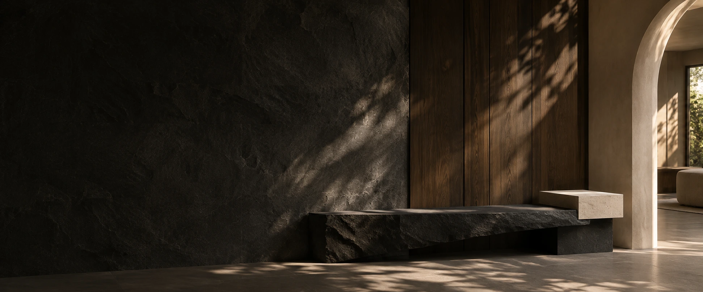

Realizacje
Sesje zdjęciowe gotowych wnętrz
Galeria realizacji
ZREALIZOWANE WNĘTRZA
Zdjęcia realizacji
w przygotowaniu.
W tym miejscu pokażemy wnętrza po zakończeniu prac. Tymczasem poznaj nasze projekty i wizualizacje.
Zobacz projekty